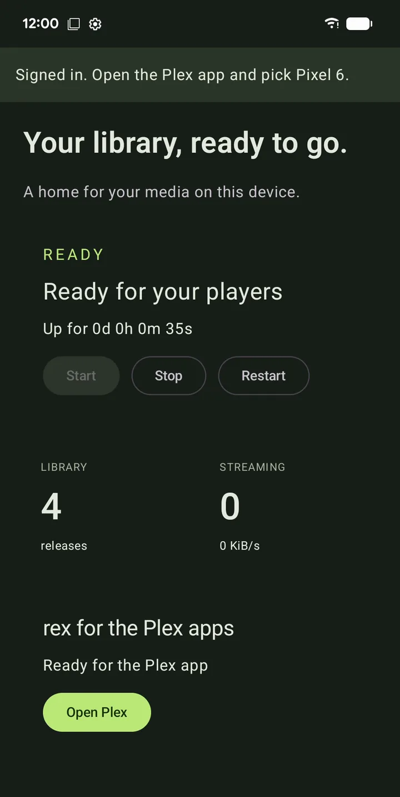
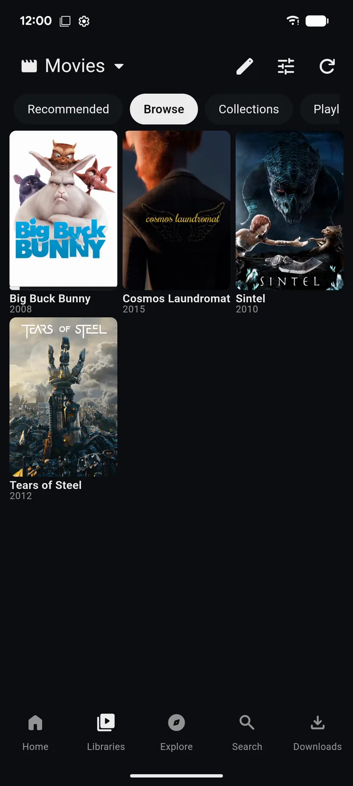

zurg+rex for Android and Google TV
zurg+rex is a Plex server on your phone. zurg brings in your debrid accounts and Usenet, and rex serves them to every Plex app in your home, with posters, seasons and watch progress. It runs on a phone, tablet, Android TV, Google TV or Fire TV, with no computer.
It comes with a sponsorship. No sponsorship? rex for Android is free and plays what its addons bring.
| The app | In the Plex app | In any other Plex app |
|---|---|---|
 |
 |
 |
Before you start
Step 1. Download it
On the device, open the download page, signed in to GitHub with your sponsor account, and pick the file for its processor:
One file works on phones and TVs alike.
GitHub says 404? The account you are signed in with has no sponsor access yet. If you just sponsored, accept the invite first; invites go out within 15 minutes.
Step 2. Install it
Open the downloaded file and allow installation from the app that opened it. Android or Play Protect may ask you to confirm.
What you should see. zurg+rex in your list of apps.
Step 3. Sign in to GitHub and install the engine
Open the app. It says Welcome to zurg+rex.
- Press Sign in with GitHub. The app shows a code: press Open GitHub, enter the code and approve. GitHub asks for
repoaccess because the sponsor releases are private. - Install the engine. The engine is zurg and rex themselves, kept in a package of their own so they update apart from the app. Press Install. Android asks before installing it: allow it.
What you should see. Add your providers.
Step 4. Add your providers
- Press Add an account and pick the provider.
- For a debrid account, paste its token into Provider token. For Usenet, fill in NNTP server, Port, Username, Password and Connections.
- Press Test account, then Add provider.
Add as many accounts as you have; Account name tells two accounts at one provider apart. A Usenet account's connection limit counts every other app and device using it.
Step 5. Start your library
- Choose Phone, Tablet, TV box or TV stick. Smaller choices use less memory and smaller caches.
- Allow notifications and let the app run in the background. Turn on Start after reboot if this device should always serve your library.
- Press Start my library.
What you should see. Status says Ready for your players and counts your releases. A large account's first load can take several minutes.
Step 6. Sign in to Plex
On Status, under rex for the Plex apps, press Sign in to Plex.
- On a phone or tablet your browser opens Plex's sign-in page. Sign in there.
- On a TV the app shows On any device, go to plex.tv/link and enter a code. Enter it on your phone or computer.
Use the account your Plex apps are signed in to.
What you should see. Ready for the Plex app, with an Open Plex button when Plex is on this device.
Step 7. Watch in a Plex app
Open any Plex app signed in to the same account: on this device, your TV, another phone or a computer at home. Your server is listed under this device's name, with the libraries Debrid Movies and Debrid TV. Press play.
rex converts what a player cannot play, using the device's own video encoder.
Get more titles named
Open Settings, Library and paste your DMM API key into Dmm api key, then save. zurg then asks DMM what each file is. Without the key, zurg works it out from the release name, and fewer titles get their name and poster.
A title that still looks wrong can be corrected in a Plex app: open its ⋯ menu and choose Fix Match.
The field is in nightlies from 14 November 2026. In an older one, add dmm_api_key: YOUR_DMM_API_KEY in Settings, Advanced. The same key reads your DMM wanted list.
Addons
Addons bring more to watch into rex, beside your library. Open Addons: the Internet Archive addon comes installed and adds public domain films, and the rex-addons repository is already listed. Add another repository by its link, open it and install what it offers.
Each addon says which websites it can reach, and an update that reaches new ones asks first. Install addons only from people you trust. Log shows what an addon did lately. Removing an addon takes only its titles away.
Other players on this device
You don't need a Plex app to watch.
- Library browses your folders and plays a file in the player you pick. More offers another player and the release's actions: repair, rename, tags, show all files and delete. They act on the whole release, and delete asks first and deletes it from your provider account.
- The Files app and document pickers show the same library under the zurg root. Open your player once and finish its setup before choosing it from Files.
- WebDAV players such as VLC, Kodi and Nova take
http://127.0.0.1:9999/dav/as a source. Status shows the address if you changed the port.
On a TV, move with the D-pad and Select, go back with Back, and open a release's actions with Menu or More. Select a text field to type in it and press Back to move on.
Share with other players at home
Plex apps at home need nothing more: they find rex by themselves. For a WebDAV player on another device, open Settings, Connection and turn on Expose on local network. zurg makes a username and password and shows the address to enter in that player.
Use this on a network you trust: the password travels unencrypted. It is off unless you turn it on.
Keep it running
- The notification shows the server's state and has Stop. A Quick Settings tile starts and stops it too.
- Some phones stop background apps anyway. Don't kill my app explains what yours needs.
- Updates checks for a new app and a new engine; they update separately. If a new nightly misbehaves on your device, press Show engine versions and install the one that worked. Stop your library on Status first.
- Settings has a Create backup and Restore backup. A backup holds your passwords and tokens, so keep it private. Stop your library before restoring.
- Turn rex off in Settings, Connection, rex for the Plex apps. zurg then stops feeding it.
What the app sends and where
zurg+rex has no ads and no analytics. This is everything that leaves your device:
Your GitHub token is stored encrypted on the device. Uninstalling the app deletes everything it kept.
Limits
- The device is the server. Keep it on, connected and plugged in. Converting video is slow on a cheap box.
- It plays at home. Away from home, Plex apps need an HTTPS address that reaches the device, which needs a port forward on your router. See Use it outside your home.
- Usenet needs 64-bit Android. A 32-bit device runs debrid libraries only.
- Not on Google Play. It updates from inside the app, under Updates.
Troubleshooting
If support asks for logs, open Logs and press Send logs to support. You see everything before anything is sent, then press Send and post the code you get.
Stuck? Ask in the zurg-support forum on Discord.